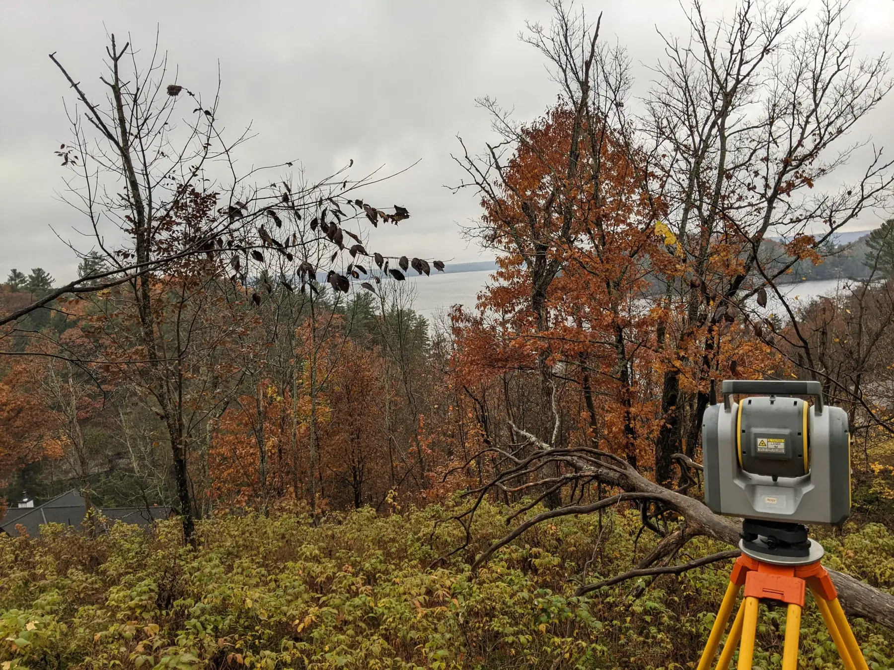
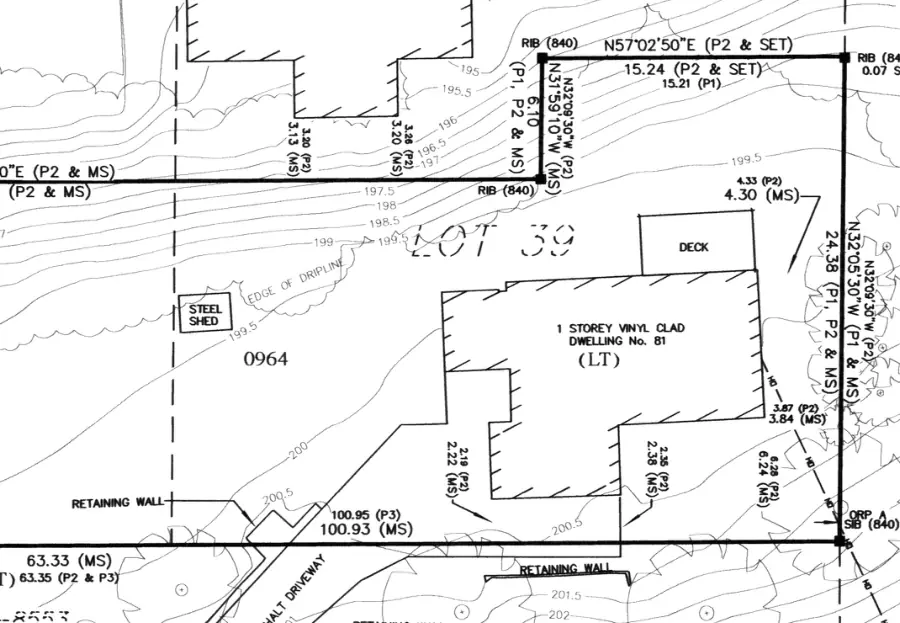
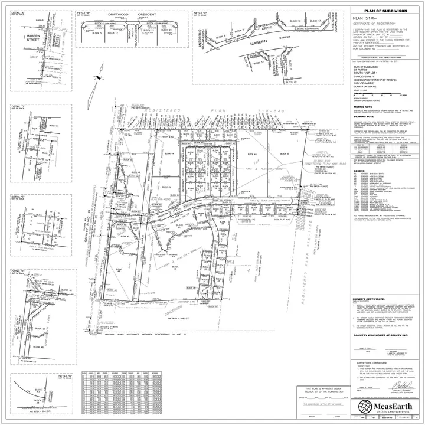
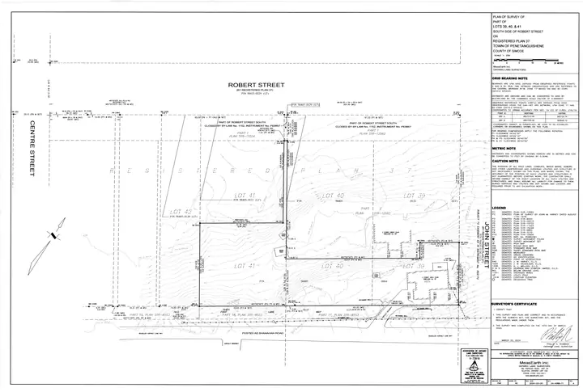
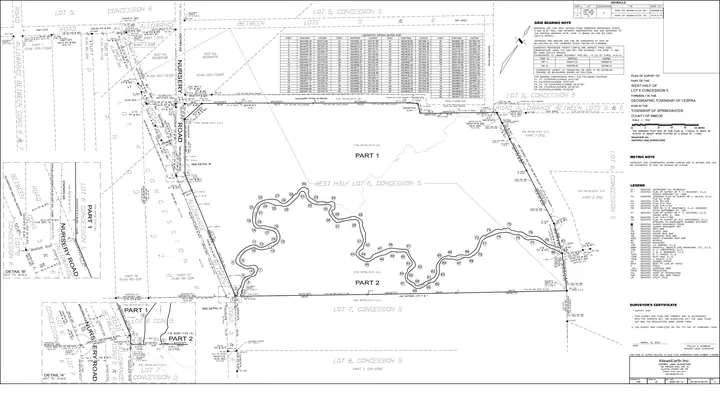
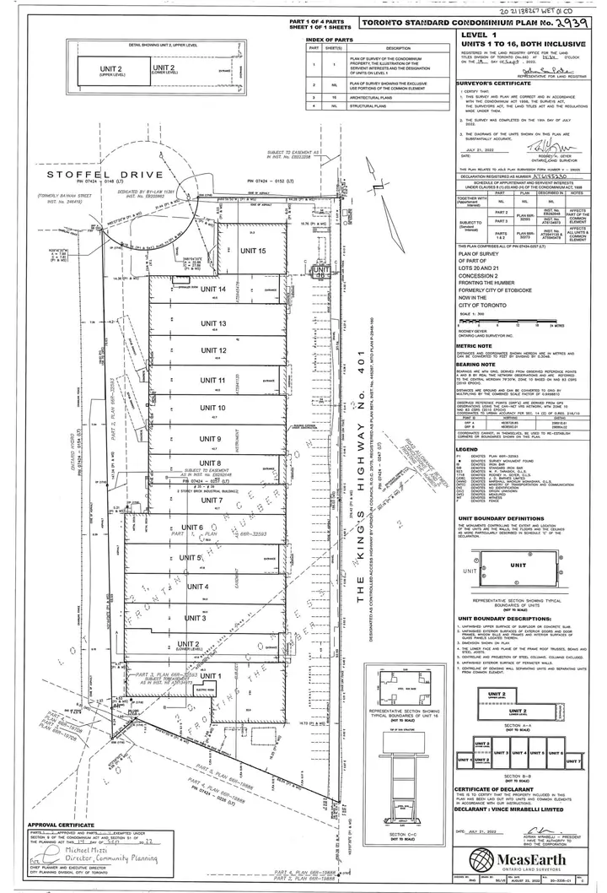
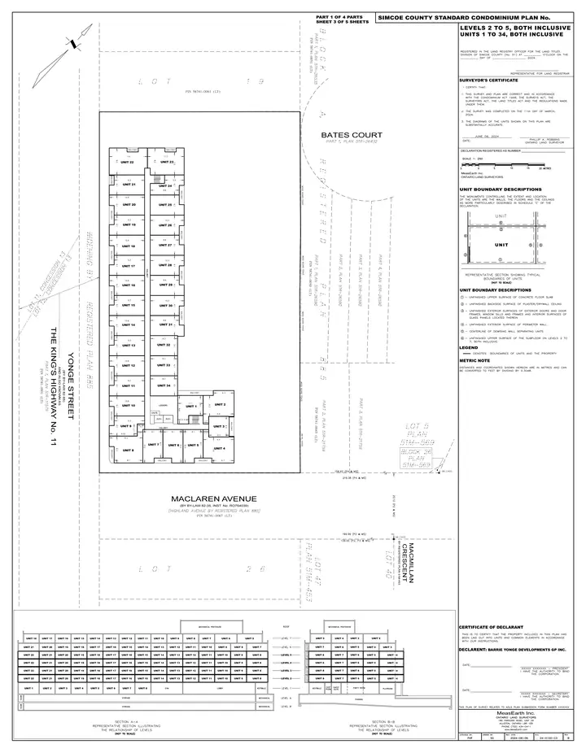
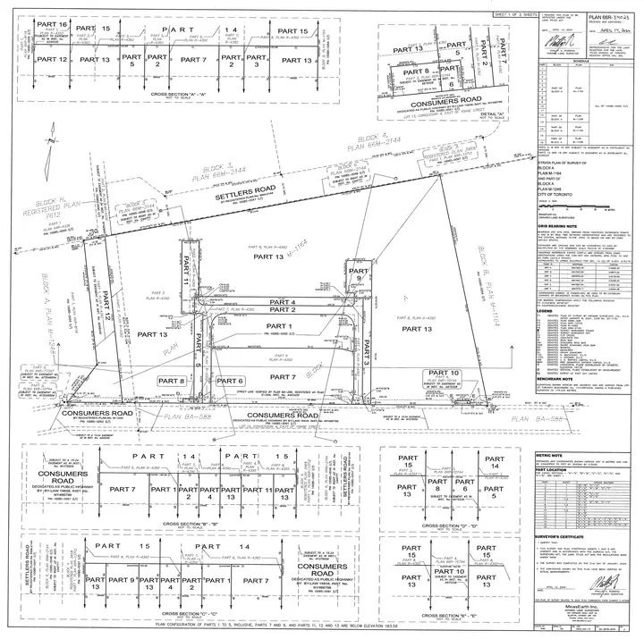
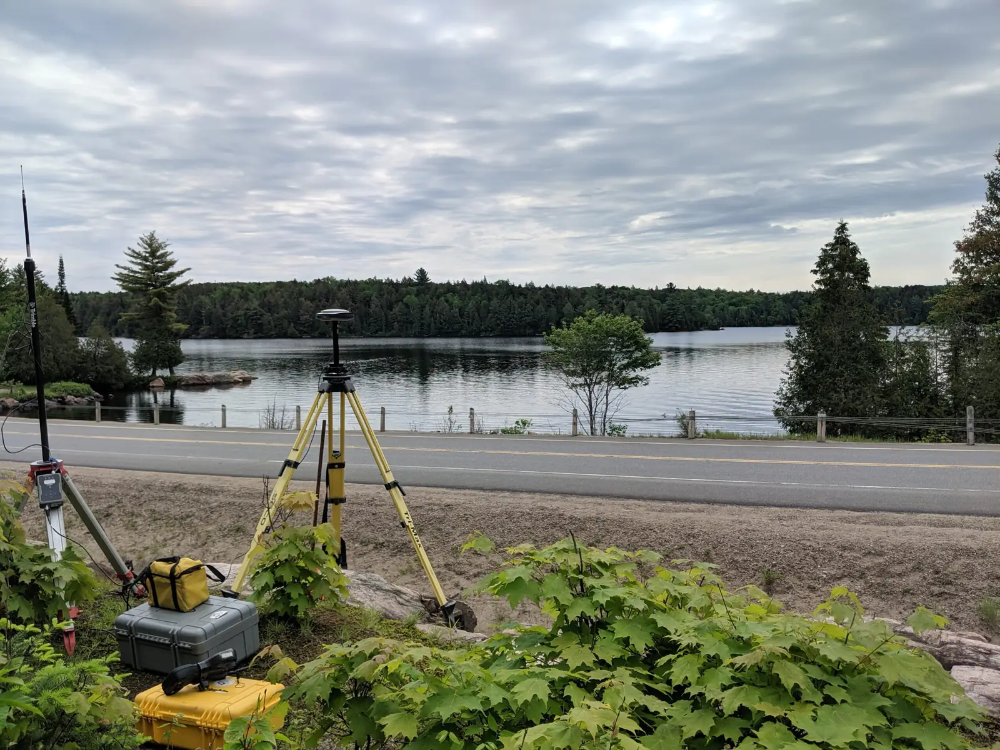
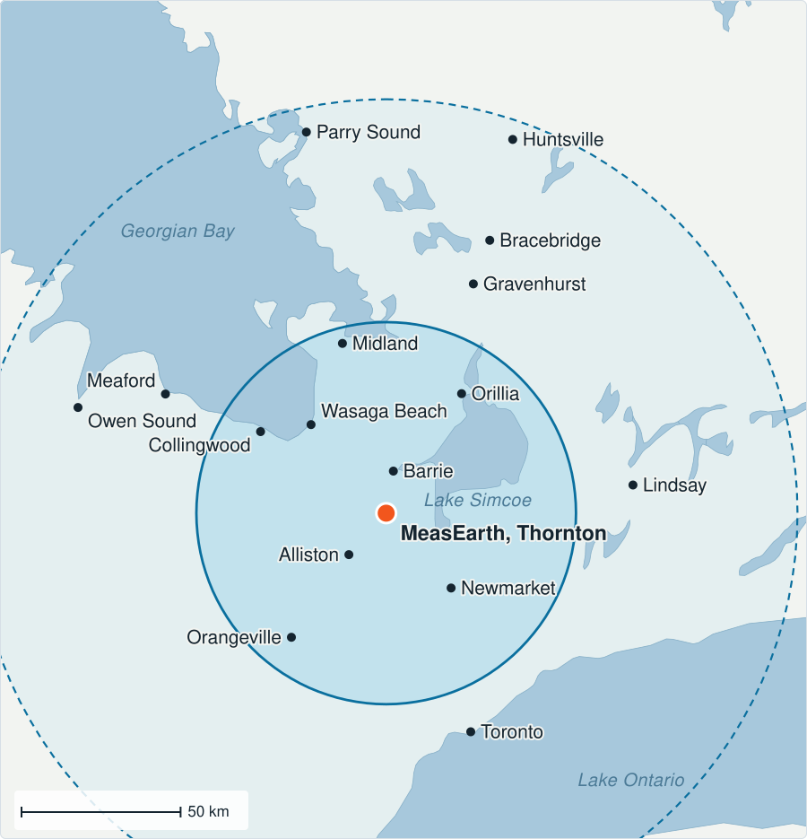

Ontario Land Surveyors · Thornton, south of Barrie
Know exactly where your property lines are.
Boundary surveys and property line staking, Surveyor’s Real Property Reports, topographic surveys, severances and construction layout for homeowners, cottagers, builders and developers. Every job is quoted as a fixed fee before we start.
- Licensed Ontario Land Surveyors
- Fixed fee, in writing
- Signed by an O.L.S.



Plan of survey, Penetanguishene · MeasEarth, 2024 · View the sheetStart here
What are you planning?
You do not need to know the name of the survey. Pick the situation closest to yours.
Services
Surveys for every stage of a property
Surveyor's Real Property Report (SRPR)
The survey lenders, lawyers and municipalities ask for: boundaries, buildings and easements on one signed plan.
Boundary survey and staking
Corners found or set and the line marked on the ground, before you build a fence, driveway or wall.
Topographic survey
Elevations, contours, trees, buildings and boundaries in one drawing, for your architect, designer or engineer.
Severances and reference plans
Reference plans for severances, lot additions, easements and shore road allowances, deposited at the Land Registry Office.
Construction layout and certificates
Excavation staking, foundation pinning, gridlines and the foundation certificates your municipality requires.
Site plans and grading plans
Site plans and lot grading and drainage plans for building permits, drawn on an accurate survey.
Condominium and subdivision plans
Plans of subdivision, plans of condominium and the surveys a development needs from draft plan to registration.
Drone, 3D scanning and bathymetric surveys
Aerial mapping, orthophotos, 3D laser scanning, volumes and lake-bottom soundings.
Settlement and deformation monitoring
Repeat precise surveys that show whether ground, pavement or a structure is moving, reported against a baseline.
Easement, property and title reports
Easement reports, property reports and chain of title analysis: what the documents say about your land, in plain language.
How it works
A survey starts before we arrive
The field work is the middle. Once you accept our fixed-fee proposal, every survey goes through the same five steps.
Research
We pull the deeds, registered plans and earlier surveys for your property and its neighbours, from the Land Registry Office and from other surveyors' records.

Records review
We compare the plans, deeds and easements, work out where the boundaries should be, and flag any conflicts before the crew goes out.
Field work
Our crew finds the survey monuments, measures the boundaries and buildings, and marks the corners where the job calls for it.
Drafting
We process the measurements and draw the plan, showing the boundaries and what is built on the land.

Final survey
An Ontario Land Surveyor checks and signs the plan. That signature is what makes it a legal survey. You get a PDF, and paper copies when you need them.

Our work
Plans we have prepared
Real MeasEarth plans. Select one to see it full size.
 Surveyor's Real Property ReportResidential lot
Surveyor's Real Property ReportResidential lot Topographic surveyContours, trees and site features
Topographic surveyContours, trees and site features

Reference planRural property Reference planUrban lot
Reference planUrban lot

Plan of condominiumTownhouse units and common elementsPlan of subdivisionLots, blocks and streets


Plan of condominiumStacked apartment units, Yonge Street, Barrie

Strata reference planParts divided by elevation, Consumers Road, Toronto
Why MeasEarth
A survey you can rely on, at a price you know up front
- Fixed fee, agreed before we startYou get one price plus HST in a written proposal. It changes only if you change the scope.
- Signed by an Ontario Land SurveyorEvery plan and report is reviewed and signed by a licensed O.L.S.
- Decades of local survey recordsWe hold the plans and field notes of earlier firms in this area, which helps us retrace old boundaries.
- Field and office under one roofOur own crews measure and our own office drafts, so questions get answered by people who know the job.
Where we work
Based in Thornton, working across central Ontario
Our office is at 244 Barrie St, a few minutes south of Barrie.

- Where we work every weekAbout 60 km around the office: Barrie, Simcoe County and southern York Region.
- Where we travelUp to about 130 km: Muskoka and its lakes, Grey County, Georgian Bay and the GTA. Island and water-access properties included.
Further out, or not sure? Ask. We travel for the right job.
Simcoe County · Muskoka · Grey County · York Region and the GTA
Common questions
Before you ask for a quote
How much does a land survey cost?
It depends on the property and the type of survey. Lot size, how much boundary evidence already exists, terrain and tree cover, the records we need to buy and travel all affect the fee.
We quote a fixed fee plus HST in writing before any work starts.
How long does a survey take?
Your proposal states the earliest date our crew can be on site and when to expect the finished plan. Timing changes with the season, so ask early if you have a closing date or a permit deadline.
Do I need a full survey, or just the corners marked?
If you only need to know where the line is, for a fence or a driveway, boundary staking is usually enough. If a lender, lawyer or municipality has asked for a survey, they normally mean a Surveyor's Real Property Report. Tell us who is asking and we will recommend the right one.
Can I rely on an old survey?
An old survey shows the property as it was on the day it was made. Buildings, fences and even boundaries may have changed since, and lenders and municipalities often ask for a current one. It is still worth sending us, because it can make the new survey faster.
Who is allowed to survey a boundary in Ontario?
Only a licensed Ontario Land Surveyor can establish or confirm a property boundary. Phone apps and municipal maps are approximate and cannot be relied on to place a fence or a building.
What do you need from me to quote?
The property address, what you are planning, and any deadline. If you have an old survey, a deed or a designer's drawing, attach it.
Request a quote
Get a fixed-fee quote
Tell us the property address and what you are planning. We reply with a written, fixed-fee proposal, so you know the price before any work starts.
- The property address or legal description
- What you are doing: buying, building, fencing, severing
- Any old survey or drawing you have (you can attach it on the contact page), and your deadline

Your project
No obligation. We use your details only to prepare the quote.
The form did not load. Please call 705 434 0411 and we will take the details by phone.